Windows
Windows 10 / 11 · 64-Bit
.zip herunterladenEntpacken und wildlinge.exe starten. Bei „Der Computer wurde durch Windows geschützt“: Weitere Informationen → Trotzdem ausführen.
● Neueste Version
✦ Alpenglühen ✦
Ein Monster-Sammel-Rollenspiel im Stil der Taschenkonsolen-Klassiker. Fang Wildlinge im hohen Gras, hol dir vier Abzeichen und stell dich auf dem Gipfelhorn dem Frostmantel, bevor er die Alpenglut löscht.
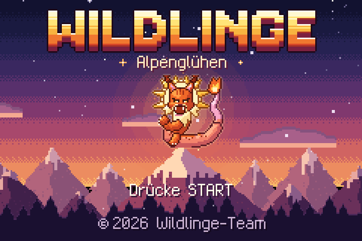
Wähle deinen Partner im Labor von Professorin Arven und miss dich mit deinem Rivalen. Erste Halle: Erde.
Im Wald wird es plötzlich eiskalt. Was hat der Frostmantel vor? Zweite Halle: Wasser.
Kristallhöhlen, Bergleute und eine Stadt unter Strom. Befreie das Funkenwerk. Dritte Halle: Blitz.
Hinauf in den Schnee bis zur Alpenglut. Vierte Halle: Frost – und dann der letzte Kampf.
Professorin Arven: „Jeder Partner spielt sich anders. Na, wen nimmst du?“

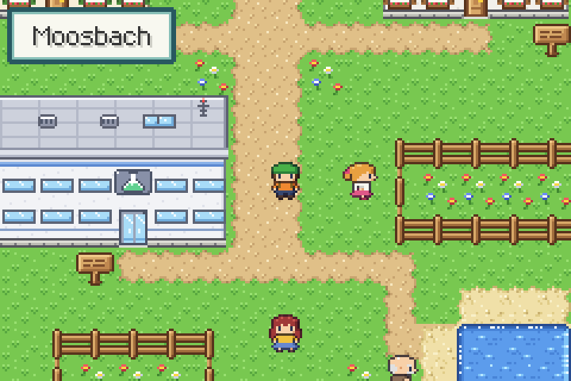

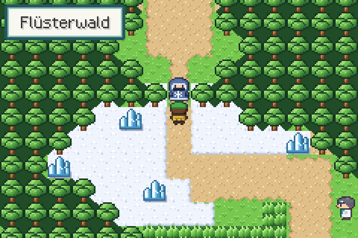
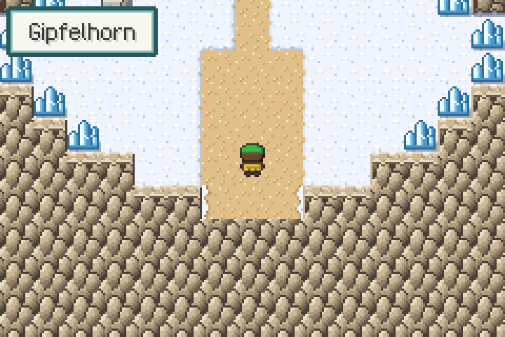
Kostenlos, ohne Konto, ohne Werbung. Immer die neueste Version – frisch gebaut.
Windows 10 / 11 · 64-Bit
.zip herunterladenEntpacken und wildlinge.exe starten. Bei „Der Computer wurde durch Windows geschützt“: Weitere Informationen → Trotzdem ausführen.
Apple Silicon (M1 und neuer)
.zip herunterladen Intel-Mac? Hier entlangEntpacken, Wildlinge.app in „Programme“ ziehen. Beim ersten Start: Rechtsklick → Öffnen (oder Systemeinstellungen → Datenschutz & Sicherheit → „Dennoch öffnen“).
x86-64
AppImage herunterladenMit Gear Lever öffnen (z. B. auf Bazzite) – dann steht Wildlinge wie jede andere App im Startmenü. Oder direkt starten: chmod +x Wildlinge-linux-x64.AppImage, dann doppelklicken.
Keine Installation
Jetzt spielenLäuft in jedem aktuellen Browser. Der Spielstand wird lokal im Browser gespeichert und lässt sich unter Optionen als Datei exportieren und auf einem anderen Gerät importieren.
Was gegen was stark ist: Angriff in der Zeile, Verteidiger in der Spalte.
| Angriff ↓ Ziel → | Nor | Feu | Was | Pfl | Bli | Erd | Win | Fro | Gif | Gei | Lic | |
|---|---|---|---|---|---|---|---|---|---|---|---|---|
| Normal | 2× | ½ | ½ | 2× | ||||||||
| Feuer | ½ | ½ | 2× | ½ | 2× | 2× | ||||||
| Wasser | 2× | ½ | ½ | 2× | ½ | 2× | ||||||
| Pflanze | ½ | 2× | 2× | ½ | ½ | 2× | ||||||
| Blitz | 2× | ½ | ½ | 0 | 2× | 2× | ||||||
| Erde | 2× | ½ | 2× | 0 | 2× | ½ | ||||||
| Wind | 2× | 2× | ½ | ½ | ½ | |||||||
| Frost | ½ | ½ | 2× | 2× | 2× | ½ | ||||||
| Gift | 2× | 2× | ½ | ½ | 0 | 2× | ||||||
| Geist | 2× | 2× | ½ | ½ | ||||||||
| ½ | ½ | 2× | 2× | 2× | ½ | |||||||
| Licht | ½ | 2× | 2× | ½ |
2× sehr effektiv · ½ nicht sehr effektiv · 0 keine Wirkung · leer = normal (1×)
Bei zwei Typen werden die Faktoren multipliziert (z. B. 2 × 2 = 4×, 2 × ½ = 1×, alles mit 0 = 0).
Alle 44 Wildlinge aus Alvenland. Suche nach Name, Nummer oder Typ – oder tippe Typen an, um zu filtern.
Spross-Wildling · 0,4 m · 7,5 kg
Ein Dachsjunges, dem statt Streifen zwei Grashalme über den Kopf wachsen. In der Sonne werden sie länger.
→ Moosdachs (Lv 16)
📍 Starter aus dem Labor von Professorin Arven in Moosbach (nicht in freier Wildbahn)
Summe 308 · Fangrate 45
Schwach gegen Feuer Wind Gift
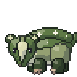
Moos-Wildling · 0,9 m · 24 kg
In seinen Rückenstreifen wächst dichtes Moos. Er gräbt Gänge unter Waldwiesen und lockert so den Boden.
← Sprössli (Lv 16) · → Dornachs (Lv 34)
📍 Nur über den Starter
Summe 414 · Fangrate 45
Schwach gegen Feuer Wind Gift
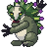
Nessel-Wildling · 1,3 m · 68 kg
Seine Mähne aus Nesseln und Dornen brennt bei Berührung. Er schützt die Wälder vor Eindringlingen.
← Moosdachs (Lv 34)
📍 Nur über den Starter
Summe 520 · Fangrate 45
Schwach gegen Feuer Wind
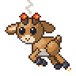
Glutkitz-Wildling · 0,4 m · 6,2 kg
Ein Steinbockkitz, dessen Hornknospen wie Zündholzköpfe glühen. Stampft es auf, sprühen Funken.
→ Glutbock (Lv 16)
📍 Starter aus dem Labor von Professorin Arven in Moosbach
Summe 308 · Fangrate 45
Schwach gegen Wasser Erde Wind
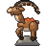
Kletter-Wildling · 1 m · 38 kg
Seine Hörner glühen wie Kohlen. Er springt über steile Felsen und hinterlässt glimmende Hufspuren.
← Zündli (Lv 16) · → Brandhorn (Lv 34)
📍 Nur über den Starter
Summe 412 · Fangrate 45
Schwach gegen Wasser Erde Wind
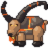
Lavahorn-Wildling · 1,6 m · 112 kg
Aus den Rissen seiner Felshaut quillt Glut. Ein Stoß seiner Hörner soll ganze Felswände spalten.
← Glutbock (Lv 34)
📍 Nur über den Starter
Summe 522 · Fangrate 45
Schwach gegen Wasser 4× Erde
Immun gegen Blitz
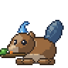
Bach-Wildling · 0,4 m · 8 kg
Es baut kleine Dämme aus Zweigen. Wittert es Gefahr, klatscht sein flacher Schwanz laut aufs Wasser.
→ Bachbiber (Lv 16)
📍 Starter aus dem Labor von Professorin Arven in Moosbach
Summe 306 · Fangrate 45
Schwach gegen Pflanze Blitz Frost
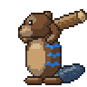
Damm-Wildling · 0,9 m · 29 kg
Mit seinen orangen Nagezähnen fällt es junge Bäume in Minuten. Seine Dämme trotzen jedem Hochwasser.
← Biberli (Lv 16) · → Dammbaron (Lv 34)
📍 Nur über den Starter
Summe 410 · Fangrate 45
Schwach gegen Pflanze Blitz Frost
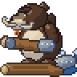
Eisenzahn-Wildling · 1,5 m · 120 kg
Zähne und Schwanz sind hart wie Stahl. Seine Dämme stauen ganze Seen auf und trotzen jedem Hochwasser.
← Bachbiber (Lv 34)
📍 Nur über den Starter
Summe 520 · Fangrate 45
Schwach gegen Blitz 4× Pflanze Frost
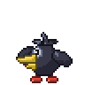
Dohlen-Wildling · 0,3 m · 1,8 kg
Zwitschli folgen Wanderern auf Schritt und Tritt und betteln um Krümel.
→ Dohlerich (Lv 18)
📍 Pfad 1, Pfad 2 (sehr häufig)
Summe 295 · Fangrate 255
Schwach gegen Blitz Gift Geist
Immun gegen Erde
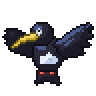
Bergvogel-Wildling · 0,7 m · 9,5 kg
Er segelt in Schwärmen um die Gipfel. Mit dem gelben Schnabel knackt er sogar Tannenzapfen.
← Zwitschli (Lv 18) · → Sturmdohle (Lv 32)
📍 Pfad 3, Pfad 4
Summe 402 · Fangrate 120
Schwach gegen Blitz Gift Geist
Immun gegen Erde
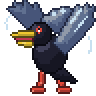
Sturm-Wildling · 1,4 m · 32 kg
Sie reitet auf Gewitterböen hoch über die Gipfel. Ihr Flügelschwung soll Tannen umknicken.
← Dohlerich (Lv 32)
📍 Gipfelpfad (sehr selten)
Summe 512 · Fangrate 45
Schwach gegen Blitz Gift Geist
Immun gegen Erde
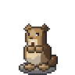
Murmel-Wildling · 0,4 m · 4,5 kg
Munggli sonnen sich auf warmen Steinen. Ertönt ein Pfiff, flitzen alle blitzschnell in den Bau.
→ Pfiffmungg (Lv 20)
📍 Pfad 1, Pfad 2 (sehr häufig)
Summe 294 · Fangrate 255
Schwach gegen Gift Geist
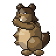
Pfeif-Wildling · 1 m · 26 kg
Sein Pfiff ist kilometerweit zu hören. Er wacht über große Kolonien und verteidigt sie mit Wucht.
← Munggli (Lv 20)
📍 Pfad 4 (sehr selten)
Summe 420 · Fangrate 45
Schwach gegen Gift Geist
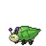
Blattkäfer-Wildling · 0,2 m · 1,2 kg
Es versteckt sich unter Blättern und frisst sich durch Wiesen. Bei Gefahr riecht es sehr bitter.
→ Stinkkäfer (Lv 16)
📍 Pfad 1, Pfad 2, Flüsterwald (häufig)
Summe 290 · Fangrate 255
Schwach gegen Feuer Wind
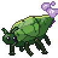
Stink-Wildling · 0,9 m · 22 kg
Sein Panzer glänzt wie ein Blatt im Tau. Wer ihn ärgert, wird von übel riechendem Dunst vertrieben.
← Chäferli (Lv 16)
📍 Pfad 3 (sehr selten)
Summe 420 · Fangrate 45
Schwach gegen Feuer Wind
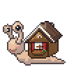
Hüsli-Wildling · 0,3 m · 3 kg
Es trägt ein winziges Holzhaus als Schneckenhaus. Bei Regen schaut es neugierig aus dem Fensterchen.
📍 Pfad 2 (häufig, vor allem auf feuchten Wiesen)
Summe 306 · Fangrate 200
Schwach gegen Gift Geist
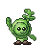
Farn-Wildling · 0,3 m · 2,1 kg
Nachts rollen sich Farnli wie junge Farnwedel zusammen. Im Flüsterwald hört man sie leise rascheln.
→ Farnwicht (Lv 22)
📍 Flüsterwald (häufig)
Summe 310 · Fangrate 220
Schwach gegen Feuer Wind Gift
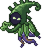
Waldgeist-Wildling · 1,2 m · 14 kg
Er huscht lautlos zwischen alten Tannen umher. Verirrte Wanderer führt er manchmal zurück zum Weg.
← Farnli (Lv 22)
📍 Nur durch Entwicklung
Summe 455 · Fangrate 45
Schwach gegen Feuer Wind Geist
Immun gegen Gift
Masken-Wildling · 0,4 m · 1,5 kg
Eine geschnitzte Holzmaske, in der ein Geist wohnt. Nachts schwebt sie klappernd durch den Wald.
→ Fratzgeist (Lv 25)
📍 Flüsterwald (selten)
Summe 310 · Fangrate 190
Schwach gegen Geist Licht
Immun gegen Gift
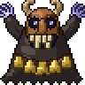
Fasnachts-Wildling · 1,7 m · 40 kg
Behängt mit Fell und Glocken zieht er durch dunkle Täler. Sein Gebimmel soll den Winter vertreiben.
← Lärvli (Lv 25)
📍 Nur durch Entwicklung
Summe 465 · Fangrate 45
Schwach gegen Geist Licht
Immun gegen Gift
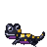
Tupf-Wildling · 0,2 m · 0,8 kg
Seine gelben Tupfen warnen Fressfeinde. Es lebt unter feuchtem Laub und kommt nur bei Regen hervor.
→ Moormolch (Lv 24)
📍 Flüsterwald, Pfad 3 (häufig bei Pfützen)
Summe 300 · Fangrate 220
Schwach gegen Erde Licht
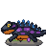
Moor-Wildling · 1,1 m · 30 kg
Es lauert in Mooren und Tümpeln. Aus seiner Haut sickert ein Gift, das das Wasser violett färbt.
← Tüpfli (Lv 24)
📍 Nur durch Entwicklung
Summe 460 · Fangrate 45
Schwach gegen Blitz Erde Frost Licht
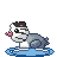
Taucher-Wildling · 0,3 m · 1,1 kg
Tauchli reiten auf dem Rücken ihrer Eltern über den See. Schon früh tauchen sie nach Fischchen.
→ Seefürst (Lv 26)
📍 Pfad 3, Seeufer bei Seewil (häufig)
Summe 302 · Fangrate 220
Schwach gegen Pflanze Blitz Frost
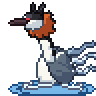
Schopf-Wildling · 1,2 m · 18 kg
Mit prächtigem Federschopf tanzt er über das Wasser. Seine Balztänze auf dem See sind berühmt.
← Tauchli (Lv 26)
📍 Nur durch Entwicklung
Summe 465 · Fangrate 45
Schwach gegen Blitz 4× Frost 4×
Immun gegen Erde
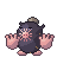
Maulwurf-Wildling · 0,3 m · 2,5 kg
Mit seiner rosa Sternnase ertastet Wühli Würmer im Dunkeln. In einer Nacht gräbt es einen ganzen Acker um.
→ Erdwühler (Lv 24)
📍 Glimmerhöhle, Feldränder an Pfad 2 (häufig)
Summe 296 · Fangrate 220
Schwach gegen Wasser Pflanze Frost
Immun gegen Blitz
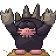
Gruben-Wildling · 1,1 m · 55 kg
Mit riesigen Grabkrallen pflügt er durch Fels wie durch Butter. Er gräbt endlose Gänge.
← Wühli (Lv 24)
📍 Nur durch Entwicklung
Summe 460 · Fangrate 45
Schwach gegen Wasser Pflanze Frost
Immun gegen Blitz
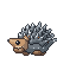
Eisenstachel-Wildling · 0,3 m · 8 kg
Es leckt Eisen aus Erzadern und härtet so seine Stacheln. Bei Gefahr wird es zur klirrenden Kugel.
→ Erzborst (Lv 27)
📍 Glimmerhöhle, Pfad 4 (häufig)
Summe 300 · Fangrate 200
Schwach gegen Feuer Wasser Blitz
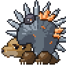
Erz-Wildling · 0,9 m · 85 kg
Seine Stahlstacheln sind scharf wie Nägel. In alten Stollen sammelt er Erz für neue Stacheln.
← Stachli (Lv 27)
📍 Nur durch Entwicklung
Summe 470 · Fangrate 45
Schwach gegen Wasser 4× Pflanze Frost
Immun gegen Blitz
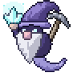
Stollen-Wildling · 0,6 m · 6 kg
Ein Geist, der verirrten Bergleuten heimleuchtet. Sein Kristalllicht flackert, wenn Steinschlag droht.
📍 Glimmerhöhle (selten)
Summe 440 · Fangrate 120
Schwach gegen Wasser Pflanze Frost Geist Licht
Immun gegen Blitz Gift
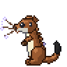
Zuck-Wildling · 0,3 m · 1,4 kg
Erschrickt Zuckli, sträubt sich sein Fell und knistert. Nachts leuchten seine Funken wie Glühwürmchen.
→ Zuckwiesel (Lv 18)
📍 Pfad 4, Stadtrand von Funkenstadt (häufig)
Summe 310 · Fangrate 200
Schwach gegen Erde
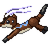
Wiesel-Wildling · 0,8 m · 9 kg
Es flitzt so schnell durch Wiesen, dass ein Funkenschweif zurückbleibt. Es lädt sich an Leitungen auf.
← Zuckli (Lv 18) · → Voltmarder (Lv 32)
📍 Pfad 4 (selten)
Summe 422 · Fangrate 120
Schwach gegen Erde
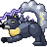
Gewitter-Wildling · 1,3 m · 32 kg
Bei Gewitter jagt er über die Kämme und zieht Blitze an. Sein Fell steht dann unter Hochspannung.
← Zuckwiesel (Lv 32)
📍 Nur durch Entwicklung
Summe 520 · Fangrate 45
Schwach gegen Erde
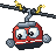
Seilbahn-Wildling · 0,9 m · 60 kg
Es gleitet an selbst gesponnenen Stromseilen über Schluchten. In Funkenstadt fährt es Kinder zur Schule.
📍 Pfad 4, bei den Leitungen nach Funkenstadt (selten)
Summe 450 · Fangrate 100
Schwach gegen Feuer Wasser Erde
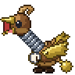
Uhrwerk-Wildling · 0,5 m · 4 kg
Es ruft zu jeder vollen Stunde. Die Uhrmacher von Funkenstadt stellen ihre Uhren nach seinem Ruf.
📍 Pfad 4, Stadtrand von Funkenstadt (selten)
Summe 460 · Fangrate 100
Schwach gegen Blitz 4× Feuer Wasser Frost
Immun gegen Erde
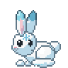
Schneehasen-Wildling · 0,4 m · 2,8 kg
Im Winter wird sein Fell schneeweiß. Es hüpft so leicht, dass es im Pulverschnee kaum Spuren hinterlässt.
→ Firnhase (Lv 30)
📍 Rund um Frostalp, Gipfelpfad (häufig)
Summe 314 · Fangrate 200
Schwach gegen Normal Feuer
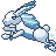
Firn-Wildling · 1,1 m · 22 kg
Mit eisigen Läufen rast er über Gletscher. Wo er bremst, wirbeln Wolken aus Eiskristallen auf.
← Flöckli (Lv 30)
📍 Gipfelpfad (sehr selten)
Summe 480 · Fangrate 45
Schwach gegen Normal Feuer
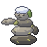
Wegweiser-Wildling · 1,2 m · 140 kg
Es steht reglos an Bergpfaden und weist Wanderern den Weg. Erst wenn es sich bewegt, merkt man, dass es lebt.
📍 Pfad 4 (oberer Teil), Gipfelpfad (selten)
Summe 440 · Fangrate 120
Schwach gegen Wasser Pflanze Frost
Immun gegen Blitz
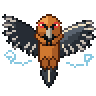
Bartgeier-Wildling · 1,6 m · 34 kg
Er reitet auf warmen Föhnwinden. Knochen lässt er aus großer Höhe auf Felsen fallen, um sie zu knacken.
📍 Gipfelpfad (selten)
Summe 472 · Fangrate 90
Schwach gegen Frost 4× Wasser
Immun gegen Blitz Erde
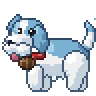
Rettungs-Wildling · 1 m · 78 kg
Er spürt Verschüttete unter meterhohem Schnee auf. Am Hals trägt er ein Fässchen mit warmem Tee.
📍 Rund um Frostalp, Gipfelpfad (selten)
Summe 468 · Fangrate 90
Schwach gegen Normal Feuer Gift Geist
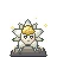
Edelweiß-Wildling · 0,2 m · 0,4 kg
Wyssli wachsen an steilen Felsen nahe dem Gipfel. Ihre weißen Blütensterne leuchten in Mondnächten.
→ Edelwyss (Lv 33)
📍 Gipfelpfad (sehr selten, auf Felsvorsprüngen)
Summe 316 · Fangrate 190
Schwach gegen Normal Pflanze Gift
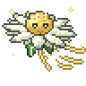
Sternblüten-Wildling · 0,8 m · 6,5 kg
Es gleitet auf warmen Aufwinden über Felswände. Sein sanftes Licht führt Verirrte sicher heim.
← Wyssli (Lv 33)
📍 Nur durch Entwicklung
Summe 490 · Fangrate 45
Schwach gegen Gift 4× Normal Feuer Pflanze Wind
Nebel-Wildling · 1,5 m · 0,1 kg
Er erscheint in eisigen Nebelnächten am Gletscher. Wer ihm begegnet, spürt einen kalten Hauch im Nacken.
📍 Gipfelpfad (sehr selten, in Schneefeldern)
Summe 480 · Fangrate 90
Schwach gegen Feuer Geist Licht
Immun gegen Gift
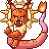
Alpenglut-Wildling · 4,2 m · 260 kg
Der Wächter der Alpenglut auf dem Gipfelhorn. Sein Atem färbt die Berge bei Sonnenuntergang rotgolden.
📍 Gipfel des Gipfelhorns – bewacht die Alpenglut (einmalige Begegnung)
Summe 594 · Fangrate 8
Schwach gegen Normal Wasser Erde Wind Gift